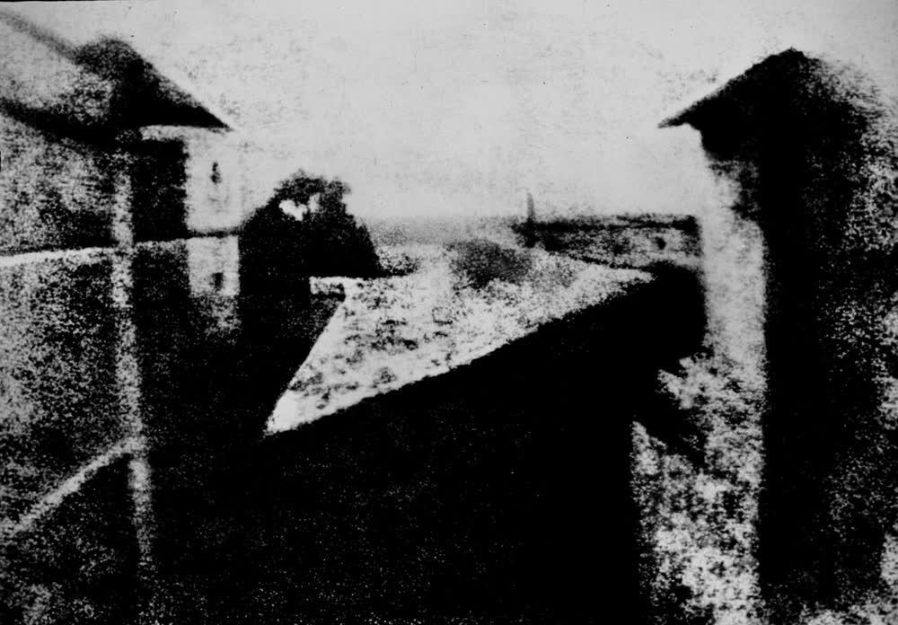

日常摄影实践 · 第 1 讲
画面有多亮，从来不是相机替你决定的事——它只是替你猜。这一讲把那三个旋钮从黑箱里取出来，交到你手上。
课程起点 · 下一讲 · 光圈与景深 → · 曝光速查表
先看一张照片。

同一个窗口，今天你用手机按下快门，大约 1/125 秒。光没有任何变化， 变的是控制光的手段。这张照片之所以糊、暗、看不清，不是因为那时的人不会取景， 而是因为曝光时间长得离谱，中途的阳光角度、天气、甚至苍蝇落上去都会留下痕迹。
这一讲只回答一个问题：画面亮度是谁定的？ 答案只有三样东西——光圈、快门、ISO。把这三位弄明白，你才算第一次真正「拍」照片， 而不是「被相机拍」。
把相机想成一段水管：光从镜头进来，经过三个可以调节的地方，最后落在传感器上。 这三个地方各管一件事，各自负责把进光量乘以一个倍数。
f/2.8、f/8 这样的数字表示。
数字越小，孔越大，进光越多——这一点最容易记反。每开大一整档（f/8 → f/5.6），进光量翻倍。
副作用：孔越大，清楚的范围（景深）越窄。把这三条放在一起，就能读出任何一张照片的亮度来源。下面这张表里，每一行的亮度几乎一样， 但「换来的东西」完全不同：
| 整档 | 光圈 | 快门 | ISO |
|---|---|---|---|
| 暗一半 | f/5.6 | 1/500 s | ISO 100 |
| 基准 | f/4 | 1/250 s | ISO 200 |
| 亮一倍 | f/2.8 | 1/125 s | ISO 400 |
整档序列（每相邻一格，进光量差一倍）：光圈 f/1.4 · 2 · 2.8 · 4 · 5.6 · 8 · 11 · 16；
快门 1/1000 · 1/500 · 1/250 · 1/125 · 1/60 · 1/30 · 1/15 · 1/8 · 1/4 · 1/2 · 1"；
ISO 100 · 200 · 400 · 800 · 1600 · 3200 · 6400。
规律只有一条：每格乘以二。数字为什么长得这么怪，看完下一讲就明白了。
既然三个旋钮都在管同一件事，那么一个变亮、另一个变暗，亮度就能原地不动。 这种「换一换」是摄影里最常用的一步棋，因为它能让你保住想要的副作用。
| 组合 | 设置 | 换来什么 |
|---|---|---|
| A | f/4 · 1/250 s · ISO 200 | 基准 |
| B | f/5.6 · 1/125 s · ISO 200 | 清楚的范围变大（拍风景更稳），但更容易拍糊 |
| C | f/4 · 1/500 s · ISO 400 | 跑动的人被定住，代价是噪点变多 |
| D | f/2.8 · 1/500 s · ISO 200 | 背景更糊、动作更凝固，代价是清楚的范围变窄 |
A、B、C、D 四张照片的亮度几乎一模一样。区别只在于：你想让什么清楚、想让什么定住、愿意忍受多少噪点。 这就是为什么「手动」值得学——不是因为手动更高级，而是因为自动模式在这些取舍上替你做了决定， 而且从不告诉你它选了什么。
一句话记住三档的关系： 孔开大一档，就等于时间少一半；时间多一倍，就等于 ISO 低一半。 三者此消彼长，决定亮度；而各自的副作用，才是你真正在选的东西。
那自动模式是怎么猜的呢？绝大多数相机按同一套假设工作：它假定整个画面平均起来是中等亮度 （大约 18% 灰），然后调整三个旋钮，把这个平均值拉到中间。 平时这个假设挺好用，但只要你拍的东西不是「平均地灰」，它就一定猜错。 相机测光的原理可参考 Cambridge in Colour：测光。
对策叫曝光补偿，写在相机上就是 ±EV，手机上就是那个能拖动的小太阳。
记住老摄影师的口诀：白加黑减——拍白的要往上加，拍黑的要往下减。
注意直方图只看亮度分布，它不判断「好不好」。拍夜景本来就该偏左， 拍雪本来就该偏右——直方图是仪表盘，不是评分表。它唯一的硬用途是告诉你两件事： 有没有一大片地方黑到失去细节，有没有一大片地方白到失去细节。
好消息是：你不需要一上来就学会三个都拧。相机已经替你调好了三个， 只留给你一个最好用的旋钮——曝光补偿。它能解决上面九成的问题。 不过 iPhone Air 和 Osmo Pocket 4 在这件事上差别很大，分开说：
iPhone Air：只有一个旋钮，但够用。它的相机 App 不让你手选光圈、快门、ISO，
三个数全由它自己分配，你能拧的就是曝光补偿——轻点主体后出现的那个「小太阳」，
往上往下拖。光圈是固定的 f/1.6，不能调；图像格式只有 HEIF 与 JPEG，没有 ProRAW。
暗光时它靠夜间模式：不是你开着快门等几秒，而是它替你连拍多张叠出来，
所以曝光时间不是你能手选的。变焦上，2× 以内画质扎实，再往上就是数码放大，越拉越糊。
Osmo Pocket 4：能真的拧的，是两个。旋开屏幕就开机。光圈和 Air 一样固定
（f/2.0，不可调），但快门和 ISO 都可以手选：拍照快门 1/8000 s – 4 s，
ISO 50–12800。于是本讲开头那句话，第一次能在真机上执行——
把 ISO 固定成最低，只调快门，直到亮度合适。这是最接近老式胶片相机的用法，
也最容易看懂三档此消彼长的关系。
在 Pocket 4 上，上面三步对应的是这几个动作：轻点屏幕选定对焦位置； 在曝光设置里直接把快门、ISO 定成具体数字（相当于把「小太阳」换成了两个明确的档位）； 要更亮更暗，改快门值就行，不必再找小太阳。日常切 1×／2×，用屏幕下方的变焦键单击即可。
练习（十分钟）：找一朵花、一个水果或一个人，在同一个位置拍四张，亮度刻意保持接近，但设置全不一样。
然后在手机相册里放大四张对比：哪一张的细节最多？哪一张最接近你眼睛看到的样子？ 把这个答案记住，比背下所有档位有用得多。
1. 画面亮度由哪三样决定？它们各自的「副作用」是什么？
光圈（孔的大小）、快门（开多久）、ISO（电信号放大多少倍）。光圈影响景深，快门影响动作被凝固还是被拖影/手抖，ISO 影响噪点多少。三样一起决定亮度，副作用则是它们真正互相区别的地方。
2. 为什么 f/4 · 1/250 s 和 f/5.6 · 1/125 s 拍出来一样亮？
因为光圈从 f/4 收到 f/5.6 是少进一半光，而快门从 1/250 秒放慢到 1/125 秒是多进一倍光，两者正好抵消。这就是「互换」：亮度不变，但景深和凝固能力被交换了。
3. 拍雪景时相机把雪拍成了脏灰色，为什么？你该动哪个旋钮、往哪边动？
因为相机默认把整个画面平均成中等亮度（约 18% 灰），大片白雪让它以为过亮了，于是自动压暗。对策是加曝光补偿（白加），往上推小太阳一到两档，雪才回到白色。反过来拍夜景、拍黑背景要往下减。
这一讲哪里没说清？回到 OpenCode 里直接问你的老师（那个正在运行 teach
的 agent）——它比你更懂你的目标，可以为你重新举例、加练，或跳到你想深入的部分。
它的笔记里已经记着你的两台机器（iPhone Air 与 Osmo Pocket 4），
随时可以让它把任何一讲改写成你设备上的具体操作。
推荐一手资料：
《美国纽约摄影学院摄影教材》
的「相机与曝光」部分 —— 本课程的骨干教材，配合本讲读一遍，概念会扎实很多。
想看图解版，读 Cambridge in Colour：曝光。
想核对你手上这台机器的确切参数，读 Apple 官方 iPhone Air 技术规格。
图片来源与授权：图片版权说明。
下一讲：第 2 讲 · 光圈与景深 ·
速查：曝光速查表